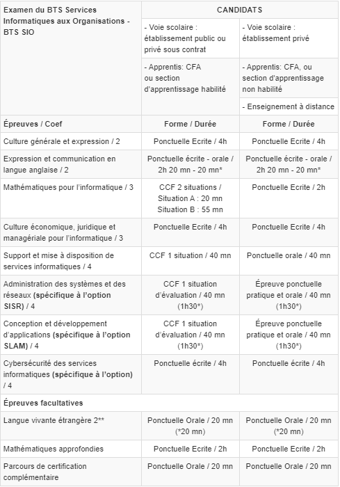

Retour aux réalisations
Janvier - Février 2026
EFREI Villejuif
Création et administration Active Directory avec Windows Server 2022
Déploiement d'un domaine sitka.local avec deux contrôleurs de domaine, gestion des rôles FSMO, création d'un sous-domaine enfant et stratégie de groupe pour sécuriser l'environnement.
Télécharger le sujet
Contexte
Projet E5 axé sur l'administration de domaine et la sécurisation d'une infrastructure Windows Server 2022 dans un environnement de formation.
Problématique
Comment concevoir un domaine Windows sécurisé et faciliter l'administration des postes et des utilisateurs tout en respectant les bonnes pratiques d'un environnement professionnel ?
Environnement technique
Logiciels
- Windows Server 2022
- Active Directory
- GPO
Réseau
- LAN d'administration
- Sous-domaine IT
- DNS interne
Utilisateurs
- Comptes utilisateurs
- Groupes de sécurité
Sécurité
- Stratégies de mot de passe
- Contrôle d'accès
Description détaillée
Création du domaine sitka.local, installation de Hermès puis Neptune comme contrôleurs de domaine, attribution des rôles FSMO, création d’unités d’organisation, et déploiement de GPO pour standardiser la configuration des postes.
Étapes réalisées
- 1Installation de Windows Server 2022 et promotion en DC.
- 2Configuration des rôles FSMO et DNS.
- 3Création du sous-domaine enfant IT.
- 4Définition des GPO et déploiement des permissions.
- 5Test des comptes et des accès réseau.
Bilan
Le domaine AD est fonctionnel, les contrôleurs communiquent correctement, et les politiques de groupe assurent une base stable pour l'administration des postes et la sécurité du parc.